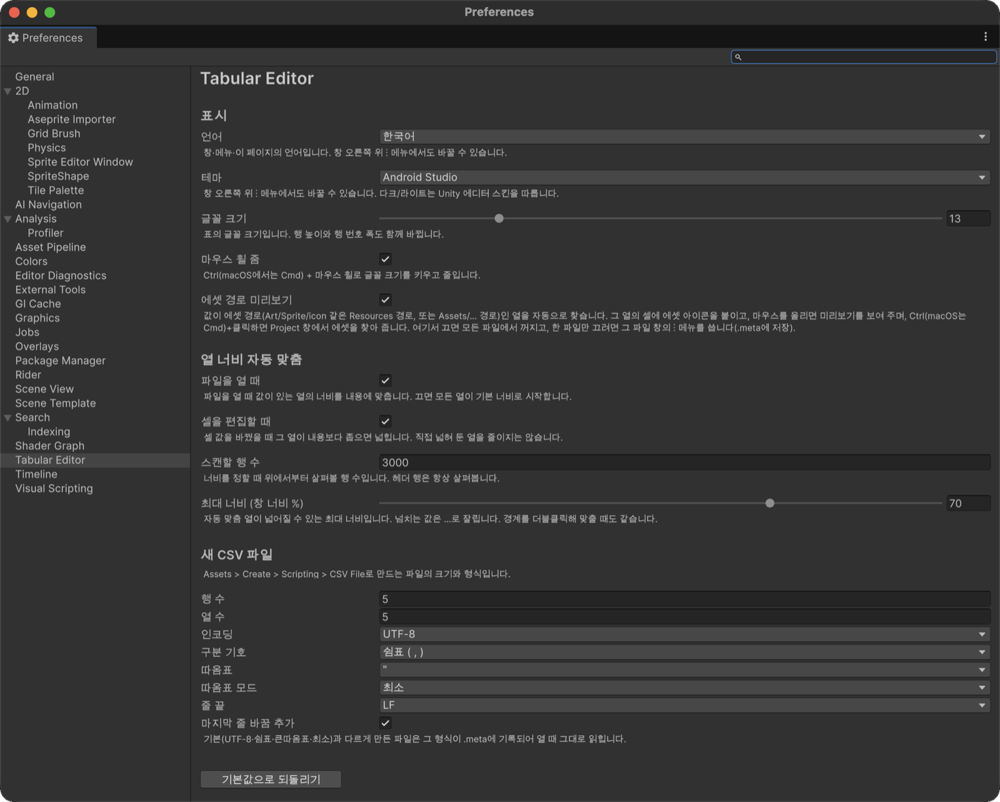

환경 설정
Edit > Preferences > Tabular Editor(macOS는 Unity > Settings > Tabular Editor) 또는 창 ⋮ 메뉴의 환경 설정... 항목에서 엽니다. 값은 사용자별(EditorPrefs)로 저장되어 같은 프로젝트를 쓰는 팀원마다 다르게 둘 수 있습니다. 기본값으로 되돌리기로 처음 값으로 돌아갑니다.

표시
| 항목 | 설명 |
|---|---|
| 언어 | 창·메뉴·이 페이지의 언어(English / 한국어). 처음에는 OS 언어를 따릅니다. |
| 테마 | Unity / Android Studio. 다크·라이트는 Unity 에디터 스킨을 따릅니다. |
| 글꼴 크기 | 8~32. 행 높이·행 번호 폭·열 너비가 함께 바뀝니다. |
| 마우스 휠 줌 | 켜면 Ctrl+휠(macOS는 Cmd+휠)로 글꼴 크기를 바꿉니다. |
| 에셋 경로 미리보기 | 에셋 경로 표시를 모든 파일에서 켜고 끕니다. |
열 너비 자동 맞춤
| 항목 | 설명 |
|---|---|
| 파일을 열 때 | 값이 있는 열의 너비를 내용에 맞춥니다. |
| 셀을 편집할 때 | 편집한 값이 들어가지 않으면 열을 넓힙니다. 직접 넓혀 둔 열을 줄이지는 않습니다. |
| 스캔할 행 수 | 너비를 정할 때 위에서부터 살펴볼 행 수(기본 3000). 헤더 행은 항상 봅니다. |
| 최대 너비 (창 너비 %) | 자동으로 넓어질 수 있는 최대 너비(기본 70%). |
새 CSV 파일
Create > Scripting > CSV File로 만드는 파일의 행 수·열 수(기본 5×5)와 인코딩·구분 기호·따옴표·따옴표 모드·줄 끝·마지막 줄 바꿈을 정합니다. 기본(UTF-8·쉼표·큰따옴표·최소)과 다른 형식은 .meta에 기록되어 열 때 그대로 읽힙니다.